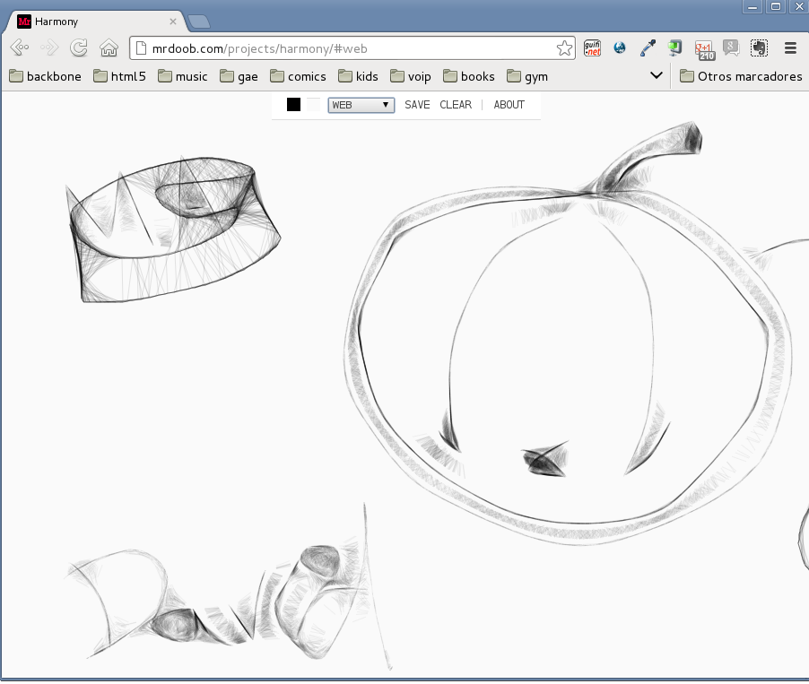
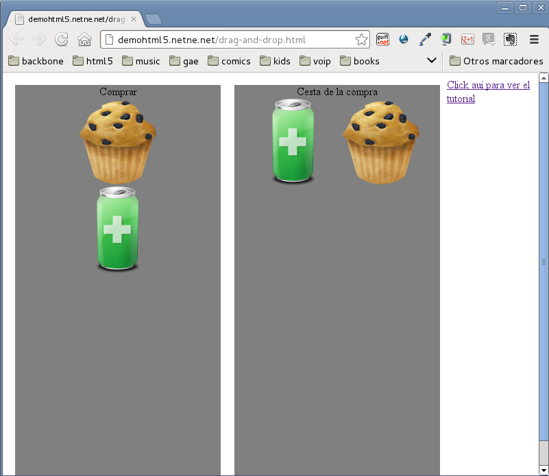

El ratón es un componente esencial de la informática de usuario hoy en día, así que debemos dominar su uso básico, que como veréis, no es excesivamente complicado sino que simplemente requiere algo de práctica.
Practicaremos un poco el uso del ratón mediante juegos, veamos algunos de ellos.
Para empezar, vamos a acceder a una de estas páginas web donde quiero que intentéis hacer un dibujo, por ejemplo una pera, un sol, o un pez con el ratón.
Practiquemos ahora uno de los conceptos más usados en la informática hoy en día, el drag&drop. Lo veremos en detalle en clase, pero quiero que empecemos a dominarlo con el sencillo ejercicio que encontraréis en esta página web.
Introduciremos hoy en la práctica una de las cosas que deberemos realizar en todas las sesiones del curso, que es la firma de asistencia a través de una página web. Con lo que llevamos visto estos días podemos introducir ya el concepto e ir practicándolo hasta que lo consigamos. Consiste en lo siguiente: